- About
- Diary
- People
- Events
- Reading
- Writing
- Meals
- Meetings
- Search

XXIV
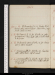Jan. 1. Tu. M Chronicle, p. 11, 12. Pirate, Vol. III.Hudsoncalls: call on R Taylor:E Hamilton & miss Smith (Southend) dine.
2. W. M Chronicle, p. 14, fin. Ariosto, C. X, çala: Boccaccio, V, 6. Percy calls: call on Booth. Write to W Curran.
3. Th.M Chronicle, revise. Ariosto, C. X, fin: Boccaccio, V, 7. Call on M Lamb n.
4. F. Commonwealth, p. 1. Ariosto, 1/2 C. XI.Saunders calls: call on Hume: sup at Lamb’s.
5. Sa.Commonwealth, p. 3. Ariosto, C. XI, fin: Boccaccio, V, 10.R Taylor, Booth & Macmillan call: call on Hayward.
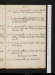Jan. 6. Su.Commonwealth, p. 4, & çala. Ariosto, C. XII, st. 37. Mrs Hamilton dines, & sleeps.
7. M.Commonwealth, p. 5/2. Ariosto, st. 71. T T calls: w. him, meet A Boinville & D Lamb:mrs Hamilton dines; adv. Booth.
8. Tu.Commonwealth, p. 6. Ariosto, st. 94: Boccaccio, VI, 1 to 4. T T calls: call on H Robinson n &E Whiten. mrs Hamilton sleeps.
9. W. Commonwealth, p. 10. Ariosto, 1/2 C. XIII. Call on H Robinson: Bt at tea: Lambs sup. meet Lubé (Aca. Soc.)
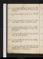Jan. 13. Su. Commonwealth, çala. Ariosto, st. 99. Dine at T T’s, w. A Boinville, Dr Lamb & W; adv. 4 Lambs & W Blunt.
14. M. Commonwealth, p. 11. Ariosto, st. 134. Call on Upcot.
15. Tu. Commonwealth, p. 13/2. Ariosto, C. XV, st. 38. Colburn calls n: theatre, 2/3 Pirate; adv. E Whitee. Bt at tea.
16. W. Commonwealth, p. 13/2. Write to Hume & Colburn. Ariosto, st. 69. Tea Mrs Morgan’s, w. Biggs & Garland, M J & W.
17. Th.Commonwealth (Rushworth). Innamorato, çala. Snows call: call on Hayward.
18. F.Commonwealth, çala. Ariosto, st. 105. Betham calls: call on T Rodd.
19. Sa. Commonwealth, çala. Ariosto, C. XVI, st. 40. L Institutione:Bt calls: call on Laird & Hayward. Write to W Curran. mrs Hamilton sups.
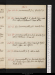Jan. 20. Su.Commonwealth, p. 14. Ariosto, st. 73.
21. M. Commonwealth, p. 16. Ariosto, st. 89; C. XVII, st. 20. Call on H Robinsonnit:Snows at tea:
22. Tu. Fog. Commonwealth, çala. Ariosto, st. 52.
23. W. Commonwealth, p. 17/2, & 1/2 p. Ariosto, st. 92. Call on H Robinson: M au soir.
24. Th. Commonwealth, 6 lines (search for Pym). Theatre, Jaffier; adv. Talfourde.
25. F. Commonwealth, p. 19/2. Call on Coates.
26. Sa.Commonwealth, p. 19: Journals. Ariosto, st. 135. Theatre, Iago, Kean, act 3; adv. Talfourde. Booth at tea.
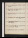Jan. 27. Su. Journals, çala. Hd Ht au soir; adv.N G.T T calls.
28. M. Journals, çala. Baxter calls: theatre, Owen Prince of Powys; adv. Talfourde.
29. Tu. Journals, çala. Call on Isa. Booth (adv.C B) & T T.
30. W. Walkley, çala. Ariosto, C. XVIII. st. 18. Grave calls.
31. Th. Write to M W S &T Campbel. Ariosto, st. 58. Bth calls: call on Jo G.
Feb. 1. F.Commonwealth, 1/2 page. Journals. Ariosto, st. 105.R Taylor & Bt call.
2. Sa. Journals, çala. Ariosto, st. 145. Booth at tea.
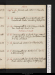Feb. 3. Su. Journals, çala. Call on T T: E Hamilton calls.
4. M. Commonwealth, p. 19, 20. Ariosto, çala. Mrs Boinville calls: theatre, Coronation of Empress Elize.
5. Tu.Commonwealth, p. 21.R C Librarye &L Institutione:Booth calls. Ariosto, st. 165. Parliament meetse.
6. W. Commonwealth, p. 24/2. Ariosto, st. 192; C. XIX, st. 20. Call on R Taylor, &J Taylor ; adv. Parkins & Laird:Bt at tea; adv. Hudson.
7. Th.Journals, çala. Ariosto, st. 48. H Marshal at tea.
8. F. Commonwealth, p. 26/2. Ariosto, st. 74. Tea T T’s, w. A Boinville & M J.
9. Sa.Commonwealth, p. 29/2. Ariosto, st. 108. Booth calls: theatre, Adeline; adv. Talfourd (& Skeffington )e.
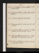Feb. 10. Su.Indisposede. Commonwealth, p. 30/2. Mrs Hamilton dines.
11. M. Commonwealth, p. 32. Call on Aspinwal & Sl Williams.
12. Tu. Commonwealth, çala. Meet Booth.
13. W. Commonwealth, p. 36/2. Ariosto, C. XX, st. 41. Call on Pouncy.
14. Th. Commonwealth, p. 37. Ariosto, st. 60. Theatre, Montrose; adv. Knowles & mrs Freemane.
15. F. Commonwealth, p. 39/2. Ariosto, st. 97. T T calls: call on O Rees: meet Macgowan: Snows sup.
16. Sa. Commonwealth, p. 41. Ariosto, st. 144. Call on Macgowan & T Rodd.
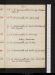Feb. 17. Su.Commonwealth, p. 42/2, & 1 1/2 pp. Hd Ht dines: call on Bt.
18. M.Commonwealth, p. 44/2. Call on Booth.
19. Tu.Commonwealth, p. 45/2. Write to M, Portsmouth. Call on Hayward.
20. W.Commonwealth, p. 45. Hudson sups. Walking Stewart dies.
21. Th.Commonwealth, çala.Bt at tea.
22. F.Commonwealth, çala. Write to Taylor, Norwh.
23. Sa. Commonwealth, çala: Laing. Theatre, Veteran; adv. White & Talfourde.
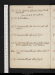Feb. 24. Su. Commonwealth, çala: Laing. M calls: call on Booth. James Boswell, Thos Coutts die .
26. Tu.Commonwealth, çala. Boccaccio, çala. Call on G Dyer n.
27. W. Commonwealth, 2 pp. See J Taylor. o
28. Th.Commonwealth, çala. Call on Booth:H M sups. Write to CurtisSturmy. meet H Robinson. o
Mar. 1. F. Commonwealth, çala. Call on Coates:Bt at tea.
2. Sa. Commonwealth, çala. Call on J Taylor.
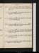Mar. 3. Su. Commonwealth, çala: Ireland. T T calls: dine at Hume’s, w. C Hume, O Neil, Bunnet, & W.
4. M. Commonwealth, çala. Ariosto, C. XXI, st. 20. T Rodd calls: H Robinson sups.
5. Tu. Commonwealth, p. 47. Ariosto, st. 72. Theatre, 1/2 Exilee. meet C Baxter.
6. W. Commonwealth, çala.H Pilcher dines (talke):Bt at tea. Write to L C Lamb.
7. Th. Commonwealth, p. 49. Ariosto. C. XXII, st. 62. Call on Hayward: Hayward & Bt call: 2 Boinvilles & 2 Turners sup.
8. F.Commonwealth, çala. Write to M W S. Ariosto, st. 98.Hudson sups.
9. Sa.Commonwealth, p. 51. Write to Rosser. Ariosto, C. XXIII, st. 25. Call on T Rodd.
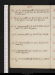Mar. 10. Su. Commonwealth, 14 lines. Ariosto, st. 73. Dine at T T's, w. M J & W; adv. Boinville & femme, & L & M Lamb.
11. M. Commonwealth, çala. Write to Rosser. Ariosto, st. 136. G Dyer & Snow call: call on Hayward.
12. Tu. Commonwealth, p. 54/2. Write to M W S. Ariosto, C. XXIV, st. 37. Call on Macgowan.
13. W.Commonwealth, p. 55/2. Ariosto, st. 89.H M sups.
14. Th.Commonwealth, p. 55; revise. Ariosto, st. 115; C. XXV, st. 20.
15. F. Commonwealth, çala. Ariosto, st. 74. Call on Booth & Hayward.
16. Sa.Commonwealth, 3 pp. Ariosto, st. 97; C. XXVI, st. 15.
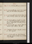Mar. 17. Su.Commonwealth, çala. Ariosto, st. 45.
18. M. Commonwealth, 1 page. Ariosto, st. 84. L Institution; adv. Lairde: theatre, Macsycophante.
19. Tu. Commonwealth, 2 pp.Red Cross Library; scandalous ministerse. Ariosto, st. 105. Call on Haywd.
20. W. Commonwealth, çala. Ariosto, st. 137. Hone calls: call on Ogle: tea Boinville’s, w. Constancio, Lawrence, Booth, Flather, A Boinville, femme, L & M Lamb, & W.
21. Th. Commonwealth, 1 page. Ariosto, C. XXVII, st. 31. Museum; King’s Collectionee:Hone calls.
22. F. Indisposede. Museum; Codringtone. Ariosto, st. 75. Call on Hayward.
23. Sa.Commonwealth, çala. Write to Hayward. Call on Jo G: Lyceum, Youthful Days of Mathews, w. M Je.T T calls n.
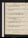Mar. 24. Su.De Senectute, C. 1 to 13. T T calls: call with him, on H B: Hd Ht at tea.
25. M.Commonwealth, 1 1/2 pp. Ariosto, st. 122.M calls: call on T Rodd.
26. Tu.Commonwealth, 2 1/2 pp; Strafford. Ariosto, st. 140; C. XXVIII, st. 29. Baxter calls (fr. Fairley).
27. W. Commonwealth, 3 pp; Strafford. Ariosto, st. 78. M calls: call on Northcote. Sir Alexander Boswell dies .
28. Th. Commonwealth, 1 page. Ariosto, st. 102. Call on Booth; adv. H B & C T & O: Hooley calls.
29. F. Commonwealth, 2 1/2 pp. Ariosto, C. XXIX, st. 37. Call on R Taylor: R Taylor calls.
30. Sa. Commonwealth, 2 1/2 pp. Ariosto, st. 74. Rosser sups. Sir John Silvester dies.
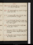Mar. 31. Su.Commonwealth, çala. Ariosto, C. XXX, st. 41. Call on Bt:Rosser sups.
Apr. 1. M. Commonwealth, 1 page. Ariosto, st. 95. Rosser & Joseph Clarke at tea.
2. Tu. Commonwealth, 10 lines. Ariosto, C. XXXI, st. 50. H & A Boinville, C T & Rosser.
3. W. Coach to Brocket: W Lamb, La. Caroline, Augustus, miss Richardson, Dr Roe, & Susan; 4 dinners; sleep 3 nights.[Not in London]
4. Th. Macaulay, England, Vol. II, 100 pp: Laud, Troubles, çala. T T calls nit.[Not in London]
5. F. Macaulay, Vol. III, p. 200. Hatfield, w. miss Richardson; La. Caroline indisposede; talk of predestination.[Not in London]
6. Sa. Macaulay, p. 310. Coach from Brocket, in the evening; S Street.[Not in London]
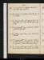Apr. 7. Su.Ariosto, st. 70: Graham Hamilton, p. 116. Rosser sups; adv. Hd Ht.
8. M. Ariosto, st. 110. Graham Hamilton, fin. Letter to M W S.
9. Tu. Commonwealth, 2 pp. Write to M W S. Ariosto, C. XXXII, st. 46. Owen & M call: Rosser, walk, & sups.
10. W. Commonwealth, 1 page. Ariosto, st. 75. Walk to Guildhall: Rosser sups.
11. Th. Giddinesse. Algn Sidney, çala. Ariosto, st. 110.M// calls.
12. F.Commonwealth, 8 lines. Ariosto, C. XXXIII, st. 23. Call on Hayward & Booth: Rosser sups. Write to Hayward & Lamb. Letter to sir J S Sidney.
13. Sa.Commonwealth, çala. Ariosto, st. 50. Write to La. Caroline Lamb. Rosser, walk: call on H Rodd.
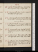Apr. 14. Su.Commonwealth, 1 page. Ariosto, st. 83. Call on Hayward: Hooleyna: Rosser sups.
15. M.Commonwealth, 1/2 page. Ariosto, C. XXXIV, st. 43. M &W Wilson call: Rosser dines.
16. Tu. Commonwealth, 11 lines. Write to M W S. Ariosto, st. 81. Call on Coates: Rosser dines. Pilcher calls. Trial in Ejectmente.
17. W. Letter to Hor Smith. Ariosto, st. 92; C. XXXV, st. 40. Call on Hayward: Hayward calls au soir: Rosser sups.
18. Th.Commonwealth, çala. Ariosto, st. 81. Booth, mrs Yaniewicz, Lubé,Bt, & Rosser call. Castruccio, p. 14.
19. F.Castruccio, p. 94. Macmillan calls on M Je. M & Rosser call. Write to M W S, & Hor. Smith.
20. Sa.Castruccio, p. 122. Call on mrs Yaniewicz & Catalani ; adv. Ayrton, Yz , & Vallabrique: meet Tho. Moore, w. mrs Yanz: call on Hayward, w. M: M dines; adv. Rosser.
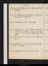Apr. 21. Su.Castruccio, p. 253.Rosser, walk: call on Hudsonn.
22. M.Castruccio, p. 319; Vol. II, p. 44. Hayward,mrs Yaniewicz & Lubé call.
23. Tu. Castruccio, p. 174. Hoarsenesse.
24. W. Castruccio, p. 275. M dines: call, w. him, on Hayward: Catalina’s Concert; Yaniewicz, & femme, Lubé (& Bruce )e. Rolfe calls on Haywardne.
25. Th.Castruccio, p. 306; Vol. III, p. 85. Call on Hayward.
26. F.Castruccio, p. 187.Mrs Yaniewicz & Lubé dine. meet Aldis.
27. Sa. Castruccio, p. 304, fin. Hudson sups.
Apr. 28. Su.Commonwealth, çala. Ariosto, C. XXXVI, st. 30. H Pilcher & Hayward call.
29. M.Commonwealth, çala. Ariosto, st. 65. Rolfe at Hayward’s & Rosser’se: M dines; adv. Rosser: call on Hayward twice: M from Read’s.
30. Tu. Commonwealth, 1 1/2 pp. Ariosto, st. 84. H Pilcher & M dine; adv. Rosser: call, w. H P, on Hayward. Call on Northcoten.Judgment signedee.
May. 1. W. Willats calls: H Pilcher dines; adv. M & Rosser: call on Hayward: call on Readn. Walbank enters. Rule refused: Execution.e
2. Th. Call on Hayward, 3 times: on Read, &mrs Read twice: seek Saunders: M dines; adv. H P. See Crook.
3. F. Write to M W S. Call on R Taylor: Bt & M calls .
4. Sa.Pilcher calls na: M & Rosser call. Copy of writ, Newmane: call on Hayward. Sleep in Pemberton Row.
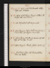May 5. Su.Walk, w. W, to Westminster-Abbey: Rosser calls. Circularse.
6. M. Call on Crook,Monro, R Taylor & O Rees: M &Rosser call: meet Pilcher.
7. Tu.Salee. M J writes to C Me. Tom Jones, çala.
8. W. Call on Hayward: Rosser,Boothn, mrs Yaniewicz & Macmillan call: M J from Macmillan.
9. Th.Call on Sturmy & Northcote: Ravenscroft calls: Rosser at tea, ppc.M calls n.
10. F. Call on R Taylor: theatre, Julius Cæsar, act 3e.
11. Sa. M & Macmillan call: M Lamb at tea. Hern au matine.
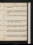May 12. Su. Ariosto, C. XXXVII, st. 21. Mrs Yaniewicz & Lubé call.
13. M. Ariosto, st. 51. Call on Painter, & other houses, w. M J & W; adv. Bt: M calls & Hd Ht: theatre, Law of Javae.
14. Tu.Ariosto, st. 81. M Jones calls: call on Hayward.
15. W. Write to Lamb.Lubé calls: call on Hume & H Rodd. Call on Crook, 10 A M.
16. Th. Letter to T T. Ariosto, st. 122. Call on Curtis:White calls from Lamb: theatre, Overreach, act 3e.
17. F. Write to T T. Ariosto, C. XXXVIII, st. 28. Macmillan calls: call, w. M J, on Painter, & H Rodd, & Hudson.
18. Sa. Commonwealth, çala. Ariosto, st. 69. Brodien &M call: meet Lubé: call, w. M J, on Lovel & Painter.
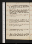May 19. Su.Letter to Taylor, Norwich. Ariosto, st. 90. Mrs Yaniewicz & Lubé call: call on Hayward. meet Fenwick.
20. M.Write to Taylor, Norwich. Ariosto, C. XXXIX, st. 33. Call, w. M J, on Capon, Barclay, Dean & Catchpool: meet M: call on Wade: Hudson sups. Macmillan calls.
21. Tu.Ariosto, st. 65. Snow & Lubés call:M J fr. Curtis.Kenyon, Strand.
22. W. Commonwealth, çala. Ariosto, st. 83; C. XL, st. 23. Kenyon, Strand:Macmillan calls n: theatre, Henry VIII, acts 1, 2, 3e.
23. Th.Trenck, çala. Edw. Taylor calls: seek L C Lamb: meet mrs Yaniewicz & filles.
24. F.Commonwealth, revise. Ariosto, st. 60. M calls: call on 3 Brodies: sup atdo, w. W.
25. Sa.Write to L C Lamb. Ariosto, st. 82.Lovel (Bride’s Passage) & Brodiesn call: Exhibition; adv. Honee.
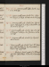May 26. Su. Commonwealth, çala. revise. Ariosto, C. XLI, st. 37.Hd Ht sups.
27. M. Commonwealth, revise. Ariosto, st. 82. Call on mrs Kenyon, w. H Rodd:H M sups; adv. Bt & M Lamb.
28. Tu.Commonwealth, çala. Ariosto, st. 102. Call on R Taylor, & Haywardn, &, w. M J, on Macmillan: sup at Lamb’s, w. M J & W.
29. W. Commonwealth, çala. Ariosto, C. XLII, st. 31. Call on Haywardn & Sturmy: mrs Yaniewicz & Pauline call.
30. Th. Commonwealth, çala. Ariosto, st. 69. Hayward calls: Bt au soir.
31. F.Commonwealth, çala. Ariosto, st. 104.Mrs Yaniewicz calls: meet R Taylor: teaMacmillan’s, w. Hodsols & M J: C Lloyd calls.
June 1. Sa.Indisposed. Ariosto, C. XLIII, st. 41. M Lamb calls, & Mn: call on H Rodd: St Clement’s, w. Macmillan & M J.
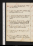June 2. Su.Castor Oile. Thiebault, çala. Hd Ht at tea. Hern à la nuite.
3. M.Ariosto, st. 84. Call on Hume: Exhibitione: S Hall, mrs Kenyon & Blackmore call.
4. Tu.Ariosto, st. 108. Nigel, Vol. I, p. 120. Meme: call on Macmillan: meet Bt, & Morgan, stationer. Sævitia.
5. W. Nigel, p. 313; Vol. II, 136. Mrs Kenyon, Prout, M Lamb & R Taylor call: call on Hayward & Doughty; adv. Kenyon & Blackmore: Hudson sups; adv. H M.
6. Th. Nigel, p. 334; Vol. III, p. 176. Call on Prout: M dines: M J from Curtis & Macmillan.
7. F. Nigel, p. 349, fin. Call on Doughty: mrs Yaniewicz au soir.
8. Sa.Brodie, çala. Call onMeet Hayward: call on Doughty; adv. mrs Kenyon & Blackmore; sign & premiume: call on H Rodd.
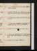June 9. Su. Ariosto, st. 145. Brodie, çala. Call onMeet R Hunter & Wallace.
10. M. Write to T T. Brodie, çala. Ariosto, st. 182. Call on Hayward: M Jones & Hudson call: P P & H M at tea.
11. Tu. Ariosto, st. 199; C. XLIII, st. 20. Meet Thos Gregory & R T.
12. W. Brodie, çala. Ariosto, st. 58. Lamb calls n, W Walker, Macmillan, & H P n: meet H Robinson.
13. Th.Brodie, çala. Ariosto, st. 104. Call on Hume.
14. F. Brodie, çala. Ariosto, C. XLV, st. 44. Meet Saunders{.} M Lamb calls: call on Baldwin: seek H Robinson, 6 times. W to M W Se
15. Sa. Ariosto, st. 83. Call on H Robinson.
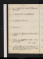June 16. Su.Ariosto, st. 117. Call on M & Hayward: Hd Ht at tea.
17. M. Ariosto, C. XLVI, st. 41. Call on Lambn.
18. Tu. Ariosto, st. 81. M au soir.
20. Th. Ariosto, st. 140, fin. Gregory at St Clement’s: call on E Whiten.
21. F. Brodie, çala. AriostRicciardetto, C. I, st. 49. Call on R Taylor. Coarse & vulgare.
22. Sa. Ricciardetto, st. 95. De Senectute, p. 6. M calls, & mrs & miss Yaniewiczn: meet R Taylor: Alex. Macgowan calls: meet Fk.
June 23. Su.Brodie, Vol. III, p. 366 to 450. Ricciardetto, C. II, st. 40.
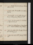24. M. Brodie, çala. Ricciardetto, st. 70. Call on Gregory.
25. Tu. Ricciardetto, C. III, st. 40. Call on Hayward, Sturmy & Macgowan: J Macgowan calls.
26. W. Brodie, çala. Ricciardetto, st. 75. Seek Pouncy. Sleep at St Clement’s.
27. Th.Pulci, st. 41. Call on Pouncy, & mrs Yaniewicz n: British Institution; adv. J C Bankse.
28. F. Pulci, st. 66. Call on Curtis: M calls, & Macmillann: meet Macgowan.
29. Sa. Pulci, st. 86. Call on Booth: Gregory & E White call.
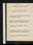July 1. M. Brodie, çala. Pulci, st. 79. M calls.
2. Tu.Castruccio, p. 84. Pulci, C. III, st. 40. Mrs Yaniewicz calls, & Macmillanna.
3. W. Castruccio, p. 175. Mrs Yaniewicz & Felicia call: M calls: call on Jo G: theatre, John Buzzbye.
4. Th.Castruccio, p. 286. M dines. Shop opens e.
5. F. Castruccio, p. 319; Vol. II, p. 70. Call on Hume & Hudson: call at Saunders’s: meet miss Taylor, jun.
6. Sa. Castruccio, p. 155. Call on O Rees, Souter, & Honen.
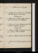July 7. Su. Castruccio, p. 250. N G calls.
8. M.Castruccio, p. 306; Vol. III, p. 80. Lobrot & Jones call: call on Saunders & Macmillan. P B Shelley dies .
9. Tu. Castruccio, p. 210. Call on Coates, Cooper & Barber: Bt au soir: meet H Robinson.
10. W. Castruccio, p. 314, fin: Sismondi, çala. Call on Bain: Bt calls: meet Hayward. H B Rosser dies .
11. Th.Castruccio, abridge. Mrs Yaniewicz calls, ppc: call on La. Aldis; adv. Barber.
12. F. Castruccio, abridge; fin. Pulci, st. 81. Call on Rodd.
13. Sa. Pulci, C. IV, st. 40. Examine papers from Removale.
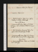July 14. Su. Examine Papers from Removale.
15. M. Examinee. Pulci, st. 70.
16. Tu.Write to Belsham. Pulci, st. 103. Call on Belsham & Chidley: E White calls. Body of P B S founde
17. W.Commonwealth, 1 page. Pulci, C. V, st. 18. Write to Pouncy. Call on Saunders & H Rodd: Kenney & M call.
18. Th. Write to Belsham; Memorial. Pulci, st. 36. Call on Hume, Knowles & Jo G: Bt calls.
19. F. Commonwealth, revise. Pulci, st. 69. Kenneyn & M call: call on Brown (W F P)na, & Rosser senior. Percy Jocelyne.
20. Sa.Commonwealth, revise. Pulci, C. VI, st. 40. Write to T T. Call on Jo G.
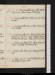July 21. Su. Commonwealth, revise. Letter to M W S. Pulci, st. 69. Call on Brown (W F P), & Jo G.
22. M. Commonwealth, revised. Pulci, C. VII, st. 40. R Taylor calls na.
23. Tu.Commonwealth, revise; 10 lines. Pulci, st. 69. Write to M W S.
24. W.Commonwealth, revise. Write to Joseph Clarke. Pulci, st. 84; C. VIII, st. 25. Call on Longman (Brown): P P & Burnet call: Sadler’s Wells, w. P P; Tom & Jerrye.
25. Th.Brodie, çala. Pulci, st. 60. Call on Saunders & Hume: meet Hill: P P & Burnet sup.
26. F. Brodie, çala. Pulci, st. 95. Bedingfield & M call.
27. Sa.Pulci, C. IX, st. 41. Lamb, & White (Isleworth) call: Joseph Fell, junr, sups.
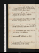July 28. Su. Commonwealth, 3 pp. Pulci, st. 93. See Achilles: dine at Hume’s, w. Lamb, Kenney, Head & W (Amelia & Julia at homee).
29. M. Commonwealth, 1 page. Pulci, C. X, st. 35. M & M Jones call: call on Jo G, sur sa femme.
30. Th.Commonwealth, 1 page. Pulci, st. 92. Call on T Rodd: Kenney sups; adv. Lamb.
31. W. Commonwealth, 1 page. Pulci, st. 132. M (from Murray) & Homersham call: call on Hudson, for M J.
Aug. 1. Th.Commonwealth, çala. Pulci, st. 154. M from Murray; send Castruccio.
2. F.Commonwealth, 2 pp. Pulci, C. XI, st. 50.
3. Sa. Commonwealth, çala. Pulci, st. 94. Call on Jo G: Booth & Rosser senr call: H M sups.
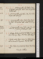Aug. 4. Su. Commonwealth, 2 pp. Pulci, st. 133. Hd Ht calls: call on John Hunt: write to miss Kent: Willats calls.
5. M. Commonwealth, çala. Pulci, C. XII, st. 53. M & Hudson call: call on Jo G.
6. Tu.Commonwealth, 1 page. Pulci, st. 89. Write to M W S. Homersham calls: Lamb & Kenney sup. Prorogatione.
7. W. Commonwealth, revise. Pulci, C. XIII, st. 40. Pilchern, M, & Graham, Glasgow, junr, call.
8. Th. Brodie, Vol. III, p. 450 to 581. Pulci, st. 76. M from Murray, delay: Bt at tea. call on Hoggnit.
9. F. Brodie, çala. Pulci, C. XIV, st. 45. Pilcher dines: call on Peacock & Hayward. Write to M W S.
10. Sa. Iliace. Pulci, st. 92 (omit 64 to 83). Meet Kenney. King for Scotlande.
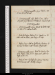Aug. 11. Su. Commonwealth, 1/2 page. Pulci, C. XV, st. 40. M & Hd Ht call.
12. M.Commonwealth, 2 pp. Pulci, st. 112. Call on Longdil, Jo G, Hayward & Peacock: Burnet sups. Londonderry dies .
13. Tu. Commonwealth, revise. Write to M W S. Pulci, C. XVI, st. 35. Call on Boothn.
14. W. Write to Brodie. Pulci, st. 75: Dante, C. I. M calls: call on Aldisn; adv. Powys: Bt sups.
15. Th.Pulci, st. 117. Call on Northcote: M dines: W Currann & Humen call: theatre, Hypocritee.
16. F. Commonwealth, revise. Write to Taylor, Norwich. Pulci, C. XVII, st. 55. Rosser, senr, calls. Tartuffe, acte 1 & 2.
17. Sa.Pulci, st. 108: Tartuffe, fin; George Dandin. M & W Curran call. Constip, 2 dayse.
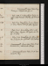Aug. 18. Su. Commonwealth, revise. Pulci, st. 139: Monnoye, 3 Impostoribus, pp. 55.
19. M.Pulci, C. XVIII, st. 66: Bracebridge Hall, p. 65. Call on Cooper & Barber: M at tea; adv. Bt: meet Hill.
20. Tu.Pulci, st. 109: Bracebridge, p. 393. Hudson (on Horace Hudson) & Bt call: call on Hayward:
21. W. Pulci, st. 125: Bracebridge, Vol. II, çala. Call on Hume, Blagden, & R Taylor; adv. Philip: Bt at tea.
22. Th. Pulci, st. 142: Bracebridge, fin. Call on Sturmy, & J Taylor; adv. L Goldsmith. City Nightcape.
23. F.Commonwealth, 1/2 page; revise. Pulci, st. 165: Boccaccio, VII, 7. Call on Curtis: H M sups.
24. Sa. Commonwealth, revise. Pulci, st. 178: Boccaccio, VI, 5 to 9.
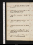Aug. 25. Su. Sick Head-achee. Pulci, st. 200: Boccaccio, VI, 10.
26. M. Pulci, C. XIX, st. 40: Boccaccio, VII, 1, 2. Lubéna, W Curran, Mn & Bt call: call on Jo G.
27. Tu.Pulci, st. 70: Boccaccio, VII, 3. M calls, & Booth.
28. W. Pulci, st. 100: Napoleon in Exile, p. 56. Call on Taylor (Norwich) & T Rodd. Deliquiume.
29. Th.Pulci, st. 130: Boccaccio, VII, 4: Napoleon, p. 272.
30. F. Baillie, p. 215 to 246. Pulci, st. 159. Taylor (Norwich) calls: call on Sidney Hall: Hudson sups. Napoleon, p. 336.
31. Sa.Baillie, çala. Pulci, st. 181: Napoleon, p. 456. Booth at tea. Mrs Pilcher, one weeke.
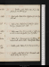Sep. 1. Su. Baillie, çala. Pulci, C. XX, st. 44: Napoleon, p. 512; Vol. II, p. 90.
2. M. Head-achee. Pulci, st. 80: Napoleon, p. 248. Hone & Bt call. Ollier
3. Tu.Pulci, st. 115: Napoleon, p. 418, fin. Call on Pouncy: Graham, junr, calls.
4. W. Pulci, C. XXI, st. 20: Boccaccio, VII, 5. Call on Gas; au soir, on Lamb; adv. Ayrton, Dyer & Grattan.
5. Th. Pulci, st. 45: Boccaccio, VII, 6, 8. M Jones, M & Lamb call: call on Curtis: Hudsons dine; adv. E White.
6. F. Baillie, çala. Pulci, st. 78: Boccaccio, VII, 9.
7. Sa. Baillie, çala. Pulci, st. 115: Merivale, çala. Booth at tea; adv. Lambsna.
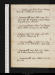Sep. 8. Su.Baillie, çala. Pulci, st. 172: Boccaccio, VII, 10; VIII, 1. S Pilcher dines & sleeps.
9. M. Commonwealth, revise. Pulci, C. XXII, st. 33. Call on Gas: sup at Ayrton’s, w. Lambs, Alsager, Amyot & Payne, bookseller.
10. Tu.Commonwealth, revise. Pulci, st. 66. Museume; Turpin: theatre; Morning, &c, 2 actse: P P sups.
11. W. Indisposede. Pulci, st. 89: Turpin, çala. Call on mrs Gisborne: P P dines; adv. M.
12. Th.Commonwealth, p. 56. Pulci, st. 125: Boccaccio, VIII, 2, 3, 4. P P & M dine: call on T Rodd.
13. F. Commonwealth, revise. Pulci, st. 155: Turpin, çala. // Call on Peacocknit, & La. Aldis.
14. Sa. Commonwealth, revise. Pulci, st. 170: Turpin, çala.
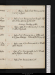Sep. 15. Su. Rhumee. Pulci, st. 206: Boccaccio, VIII, 5, 6; & 7, 10 pages.
16. M. Pulci, st. 262: Boccaccio, p. 20. M calls: S Pilcher at tea; adv. mrs Ayrton & Bt. Canning, Secretary of Statee.
17. Tu. Pulci, C. XXIII, st. 33: Boccaccio, p. 30; & VIII, 8. Call on Hayward.
18. W.Pulci, st. 54: Boccaccio, VIII, 9. J Ollier calls, & M, from Murray. Historical Dictionary, 2 pp.
19. Th.Pulci, C. XXIV, st. 40: Boccaccio, VIII, 10. M calls: call on Peacock.
20. F. Pulci, st. 75: Boccaccio, IX, 3, 4, 5. M calls: call on J Taylor: Booth at tea.
21. Sa.Pulci, st. 110: Boccaccio, IX, 6, 7, 8.
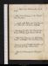Sep. 22. Su. Pulci, st. 146: Boccaccio, IX, 9, 10. Giddinesse.
23. M. Pulci, st. 179: Boccaccio, II, 1 to 5. M calls: call on Macgowan.
24. Tu.Ayrton, 2 pp. Pulci, C. XXV, st. 41: Boccaccio, II, 6. Call on Cove: seek Hanson: Booth calls.
25. W. Write to Ayrton. Pulci, st. 83: Boccaccio, II, 7. R Evans & M call: Taylor (Norwich) & Rd sup.
26. Th.Pulci, st. 144: Boccaccio, 1/2 II, 8. Seek R Taylor: Ayrtonna, Sir R Phillips n, W Curran & M Lamb call.
27. F.Boccaccio, II, 8, fin, 10. Breakfast at Ayrton’s: call R Taylor (adv. pere) & Jo G: W Curran dines.
28. Sa.Pulci, st. 178: Boccaccio, IV, 2. Macgowan calls.
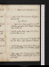Sep. 29. Su.Pulci, st. 244: Boccaccio, IV, 3, 4.
31. M. Pulci, st. 280: Boccaccio, IV, 6. R Taylor & W Curran call. Lady Aldis dies .
Oct. 1. Tu.Pulci, st. 332: Boccaccio, IV, 7, 8, 9. Mrs & S Pilcher call: call on Booth: theatre, Harlequin Hoax, & Peter Fine.
2. W. Write to Ayrton. Pulci, C. XXVI, st. 51: Boccaccio, IV, 10; Tom. I, p. 34.
3. Th. Pulci, st. 101: Boccaccio, p. 68. Ayrton & M call: seek Hume: call on Hayward & Peacock.
4. F.Write to Everina. Pulci, st. 152: Boccaccio, p. 88. Hepburn & M calls: mrs & S Pilcher, 4 nightse. Missing fr Colburn on [F?]ourna[l?]e
5. Sa.Pulci, C. XXVII, st. 51: Boccaccio, p. 112. Call on Northcote: theatre, 1/2 Twelfth Nighte: Taylor (Norwich) calls n.
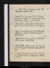Oct. 6. Su. Pulci, st. 100: Boccaccio, p. 144. Hepburn dines: W Curran sups.
7. M. Pulci, st. 156: Boccaccio, p. 156. Funeral, Lady Aldis, w. Skeffington, Barber, Uwins, Woodham, Barney & Powyse: sup at Lamb’s. Jane at Viennae
8. Tu.Pulci, st. 206. Call on Hume & Blagden: R Taylor & M call: sup at Lamb’s; adv. Talfourd.
9. W. Pulci, st. 253: Boccaccio, p. 165. Call on Hill: Skeffingtonn, J Taylorn, & M call: tea Ayrton’s. Peacock calls.
10. Th.Pulci, st. 288: Boccaccio, p. 178. Seek P Hoare: call on Hanson: Booth at tea.
11. F. Write to M W S. Pulci, C. XXVIII, st. 40: Boccaccio, p. 202. Mn, Ayrton & Hill call: call on Aldis &T Rodd.
12. Sa. Pulci, st. 73: Boccaccio, p. 220. Seek Davison: call on Belsham & Skeffingtonna: theatre, 3/10 Rivalse.
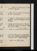Oct. 13. Su.Pulci, st. 110: Boccaccio, p. 271. Call on Hudson & Hayward.
14. M. Pulci, st. 152, fin: Boccaccio, p. 308. Ayrton calls n: call on Ayrton.
15. Tu. Dante, C. I: Boccaccio, Tom. II, p. 10: Liberal, passim. Peacock, M & Blagden call. Write to P Hoare.
16. W.Dante, C. II, III: Boccaccio, p. 32. Peacock calls: theatre, School for Scandal; adv. Skeffington & Osborne & Olliere. Mrs Garrick dies.
17. Th. Dante, C. IV, V. Call on Sturmy & Peacock.
18. F. Dante, C. VI: Boccaccio, p. 61. Meet J C Jennings: dine at Aldis’s, w. Skeffington, Uwins, & Woodham; adv. W. Hepburn & M call.
19. Sa. Dante, C. VII. Call on Ayrton.
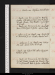Oct. 20. Su.Dante, C. VIII. Hepburn & Booth dine.
21. M.Dante, C. IX, X: Boccaccio, p. 85. Write to Ayrton. Hill calls (sent for): send to Lamb: M calls: theatre, Sleep-Walkere. Taylor (Norwich) calls.
22. Tu.Dante, C. XI: Boccaccio, p. 102. Lamb calls twice (B Montagu), & Ayrton: call on T Rodd.
23. W. Castruccio, p. 20. Dante, C. XII: Ariosto, Sat. II: Boccaccio, p. 121. Theatre, Hamlet, act 2e.
24. Th.Castruccio, p. 44. Dante, C. XIII: Behemoth, çala. Lambs, H M & Hd Ht sup.
25. F. Dante, C. XIV. Expect Hill: call on Hayward: Hepburn at tea.
26. Sa.Dante, C. XV: Boccaccio, p. 138. Hill & Ayrtonn call: theatre, Douglas; adv. Knowles, J Taylor & L Goldsmithe. Write to Ayrton. Call on O Rees.
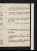Oct. 27. Su.Castruccio, p. 84. Dante, C. XVI: Boccaccio, p. 146. Lamb calls: dine at Hume’s, w. W; adv. Minnses.
28. M. Castruccio, p. 166. Ayrton & W Curran call: theatre, B Opera, & Irish Tutor; adv. Estee.
29. Tu.Castruccio, p. 226. Meet Hill: call on SCurran junr, & Btn: Hepburn at tea: theatre, 1/5 Road to Ruine.
30. W. Castruccio, p. 319. Hone calls: call on Peacock.
31. Th.Castruccio, revise; Vol. II, p. 50. Write to Fordham. Ayrton & Hudsons call: call on Macmillann & Hume.
Nov. 1. F.Castruccio, p. 110. H Pilcher, mrs Hulkes, Longstaff & W Curran call: Hudson dines; adv. Booth & Bt.
2. Sa.Castruccio, p. 202. H Pilcher calls, & Laurie of Stowmarket: call on mrs Kenyon.
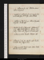Nov. 3. Su. Castruccio, p. 264. H Pilcher dines: call on Hayward.
4. M. Indisposede. Castruccio, p. 306. Taylor (Norwich) calls, ppc. Hd Ht sups: call on T Rodd.
5. Tu.Castruccio, Vol. III, p. 90. Call on Haywardn & Ayrton: Booth calls.
6. W.Write to Ayrton & Hayward. Castruccio, p. 230. Call on Booth & femme: theatre, Two Galley-Slaves; adv. J Taylor & Boaden junre.
7. Th.Castruccio, revise. M calls: Hudsons sup.
8. F.Castruccio, p. 314, fin. Ayrton calls: theatre, 1/2 Isabella; adv. J Taylor & sone.
9. Sa.Castruccio, revise. Dante, C. XVII. Call on Northcote (born 1746), & Bain.
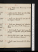Nov. 10. Su.Dante, C. XVIII: Boccaccio, p. 156. Call on Hayward.
11. M.Castruccio, revise. Dante, C. XIX. Macmillan & M Jones call: theatre, Richarde.
12. Tu.Dante, C. XX: Boccaccio, p. 172. Call on Norie, R Taylorn & Peacock.
13. W.Dante, C. XXI: Boccaccio, p. 185. Call on Belsham, Hoggn, Hume, & Boothn: theatre, C G, 1/2 Othelloe.
14. Th.Write to Taylor, Norwich. Dante, C. XXII: Boccaccio, p. 213. Hogg calls: call on Jane Williams. Bt at tea.
15. F.Write to M W S. Dante, C. XXIII: Boccaccio, p. 235. Call on Cha. Hanson & Peacock.
16. Sa.Dante, C. XXIV: Boccaccio, p. 248. Hudson sups.
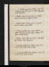Nov. 17. Su.Castruccio, revise. Dante, C. XXV: Boccaccio, p. 262; Tom. III, p. 22. Meet Hayward: write to Ayrton.
18. M. Dante, C. XXVI: Boccaccio, p. 56. Theatre, Romeo; adv. Osborne, Talfourd & Pricee.
19. Tu.Dante, C. XXVII: Boccaccio, p. 71. Ayrton calls: Bt at tea: call on Rodd.
20. W.Commonwealth, 1/2 page; revise. Dante, C. XXVIII: Boccaccio, p. 86. Call on Hanson: H P dines; Booth at tea.
21. Th.Dante, C. XXIX: Boccaccio, p. 92. Mrs Williams at tea: meet Hayward.
22. F.Commonwealth, revise. Dante, C. XXX: Boccaccio, p. 116. Call on Macmillan.
23. Sa.Commonwealth, revise. Dante, C. XXXI: Boccaccio, p. 138. Seek L C Lamb.
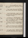Nov. 24. Su.Commonwealth, revise. Dante, C. XXXII: Boccaccio, p. 171. Call on Aldisn: Hd Ht at tea; adv. M.
25. M. Dante, C. XXXIII: Boccaccio, p. 181: Werner. Call on Hanson: meet Macmillan: Hudson dines.
26. Tu.Write to M W S, & T Moore. Dante, C. XXXIV: Boccaccio, Tom. IV, p.18. Seek R Taylor & Davison: call on Blatspeil: Hd Ht sups.
27. W.On Tragedy, p. 3. Dante, Purgatorio, C. I: Boccaccio, p. 28: Werner, çala. Call on Pouncy & J Taylor: meet Skeffington: theatre, D L e: Hd Ht dines: M calls, & miss Collins.
28. Th.Tragedy, p. 4/2. Dante, C. II: Boccaccio, p. 35. Call on Pouncy, Sturmy & Blatspeil: Hudson dines.
29. F. Dante, C. III: Boccaccio, p. 68. C Colnet calls: theatre, Venice Pd; adv. Cookes, sit in their boxee.
30. Sa.On Length of Life, p. 4. Dante, C. IV: Boccaccio, p. 88. Call on Macmillan, & Hayward n.
Dec. 1. Su.Length of Life, p. 7/2. Dante, C. V: Boccaccio, p. 97. Call on Btn & Hayward.
2. M. Length of Life, p. 8/2, & 1 1/2 pp. Dante, C. VI. Call on Macgowan: Bt at tea: Betham sups.
3. Tu. Dante, C. VII. Bt calls, 2 hours expected: call on Sturmy: theatre, Maid Marian; adv. Cooke jrBacone.
4. W. Dante, C. VIII: Boccaccio, p. 111. Call on R Taylor & Creswick: M dines.
5. Th.Dante, C. IX: Boccaccio, p. 125. Call on Curtis, Tippern, Davison & T Rodd: Hudson dines: H M sups.
6. F.Note on Life, 7 lines. Dante, C. X: Boccaccio, p. 144. M Jones calls: call on Haywardn: Jane Williams at tea.
7. Sa.Dante, 24 lines: Boccaccio, p. 161. Call on Hayward: M calls: theatre, C Ge. Dr Aikin dies .
Dec. 8. Su. Length of Life, 2 pp. Dante, C. XI: Boccaccio, p. 189.
9. M. Castruccio, p. 38. Dante, C. XII. M, & H M, & M Lamb call: call on H Rogersn: theatre, Othello, acts 2 & 3e.
10. Tu.Castruccio, p. 94. Dante, C. XIII. M calls: call on H Rogers.
11. W.Castruccio, p. 130. Dante, C. XIV. M calls: call on R Taylorn & Hayward: theatre, Huguenote.
12. Th. Dante, C. XV: Boccaccio, p. 199. Call on Wallace, Betham, Bain, & Jo G ; adv. wife: meet Malthus, silent.
13. F.Note // on Life, 17 lines. Castruccio, p. 154. Dante, C. XVI: Boccaccio, p. 217. M & Macmillan call: P P dines: call on J Lowndes: theatre, 3/10 Huguenote. Ha[ ]d
14. Sa. Dante, C. XVII: Boccaccio, p. 224. Hayward calls: call on Purland, Clarke, & mrs Ayrton: Booth at tea.
Jan. Dec. 15. Su. Dante, C. XVIII: Boccaccio, p. 244. Desmousseaux & Dr Southwold Smith call: call on Ayrton.
16. M.Write to Ayrton. Dante, C. XIX: Boccaaccio, Tom. V, p. 24. Call on Orme, Prouet & Rodd.
17. Tu.Dante, C. XX: Boccaccio, p. 30. Call on Macgowan & Macmillan: theatre, D Le.
18. W. Dante, C. XXI. Call on Dr Jones na, & Carey: seek Thos Moore: theatre, Othello, act 3e.
19. Th.Write to W Wilson. Dante, C. XXII. Hudson dines: theatre, Other Times; adv. Skeffington, C Heath, Hamilton, Goldsmiths, & J Taylore. Stuart (Regent Street) calls.
20. F. Dante, C. XXIII: Boccaccio, p. 49. Hayward, Hooley & M call: call on Davison, & Macreadyn.
21. Sa.Dante, 1/2 C. XXIV: Boccaccio, p. 63. Call on Rodd; adv. Triphook: theatre, C G e. Call on Hanson.
Dec. 22. Su.
[fol. 27r] Dante, C. XXIV: Boccaccio, p.
96. Call on Hayward, & Wallace.
23. M. Letter to M W S. Dante, C. XXV. Macready calls: call on Haywardn: Hd Ht from Francee: theatre, 1/5 Romeoe. Trial for Damagese.
24. Tu.Write to M W S. Dante, C. XXVI: Loves of the Angels. Hayward calls: call on G B Whitaker.
25. W. Dante, C. XXVII: Maid Marian. N G calls: call on Hayward, Davison, Roddn, & Northcote.
26. Th. Castruccio, p. 175. Dante, C. XXVIII. Call on Davisonn & R Taylor: Skeffington & M call: C Colnet dines; adv. Stuart. mrs Williams calls.
27. F. Castruccio, p. 210. Boccaccio, p. 118. Hd Ht dines; adv. F Ht, 2 Ms, & C Colnet.
28. Sa.Castruccio, p. 319. Call of on M Lamb; adv. mrs Reynolds: theatre, Busy Body; adv. Skeffingtone. M Lamb
Dec. 29. Su.Castruccio, Vol. II, p. 58.
30. M. Castruccio, p. 109. Call on R Taylor: theatre, Essex; adv. Talfourd & Uwinse.
31. Tu. Castruccio, p. 159. Call on Whitakern, & Galloway: M calls: Hd Ht sups.
Contact --  -- Cookies/Privacy
-- Cookies/Privacy